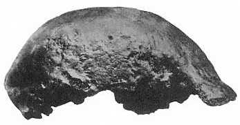

Der Schädelkappen-Fund von Java Man

Trinil 2, "Java Man", "Pithecanthropus I", Homo erectus (war Pithecanthropus erectus)
Von Eugene Dubois 1891 in der Nähe von Trinil auf Java entdeckt. Das Alter ist unsicher, wird aber auf etwa 700.000 Jahre geschätzt. Dieser Fund bestand aus einer flachen, sehr dicken Schädelkappe, einigen Zähnen und einem Oberschenkelknochen, der etwa 12 Meter entfernt gefunden wurde (Theunissen, 1989). Die Gehirngröße beträgt etwa 940 cc. Trinkaus und Shipman (1992) geben an, dass die meisten Wissenschaftler heute glauben, der Oberschenkelknochen gehöre einem modernen Menschen, aber wenige der anderen Referenzen erwähnen dies.
Sangiran 2, "Pithecanthropus II", Homo erectus
Ein sehr ähnlicher, aber vollständigere Schädelkappen wurde 1937 von G.H.R. von Koenigswald
in Sangiran auf Java gefunden.
Er ist sogar noch kleiner, mit einer Gehirngröße von nur 815 cc.
Viele Kreationisten betrachten Java Man als einen großen Affen, doch er ist weitaus menschlicher und hat eine weitaus größere Gehirngröße als jeder Affe, und der Schädel ähnelt anderen Homo erectus Schädeln. Es wird auch häufig behauptet, dass Eugene Dubois, der Entdecker von Java Man, später beschloss, es sei nur ein großer Gibbon, aber diese Behauptung ist nicht wahr.
Verwandte Links
Kreationistische Argumente über Java ManVergleichen Sie Java Man mit dem Turkana Boy
Vergleichen Sie Java Man mit einem Schimpansen und einem Neandertaler
Diese Seite ist Teil der FAQ zu Fossilien-Hominiden im TalkOrigins-Archiv.
Startseite |
Arten |
Fossilien |
Kreationismus |
Lektüre |
Referenzen
Illustrationen |
Neuigkeiten |
Rückmeldung |
Suche |
Links |
Fiktion
http://www.talkorigins.org/faqs/homs/java.html, 04/28/97
Copyright © Jim Foley
|| E-Mail an mich